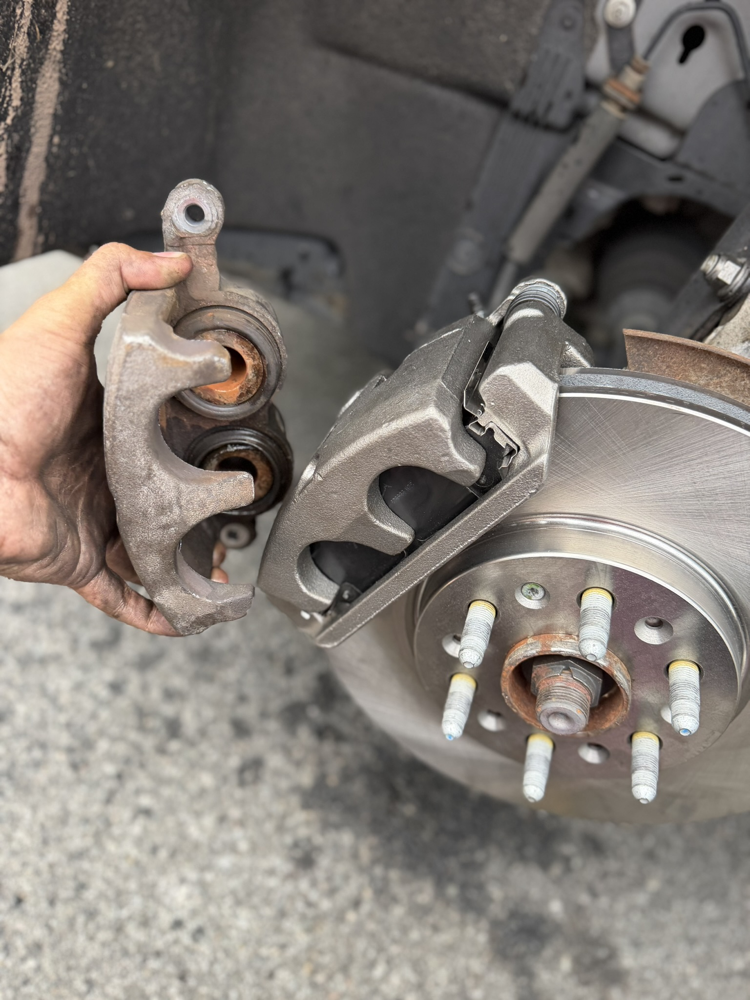
Brake repair
Pads, rotors, caliper checks, brake inspections, and stopping-power concerns.
North Jersey mobile mechanic
Matthew handles brakes, oil changes, diagnostics, tune-ups, and common engine repairs without making you lose a day at the shop.
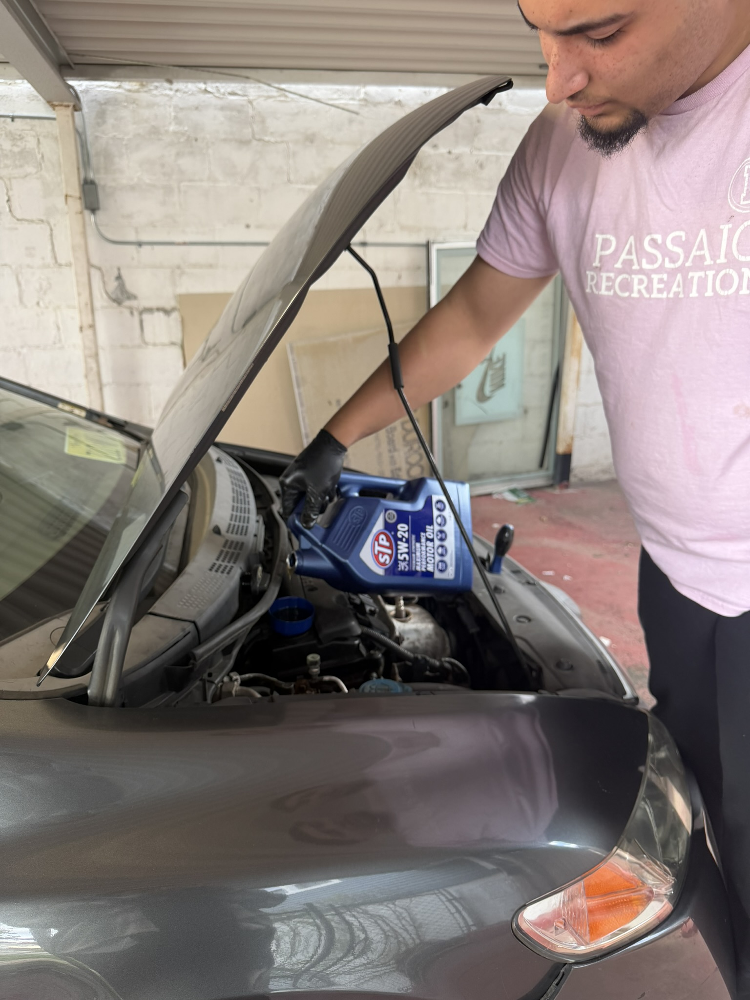
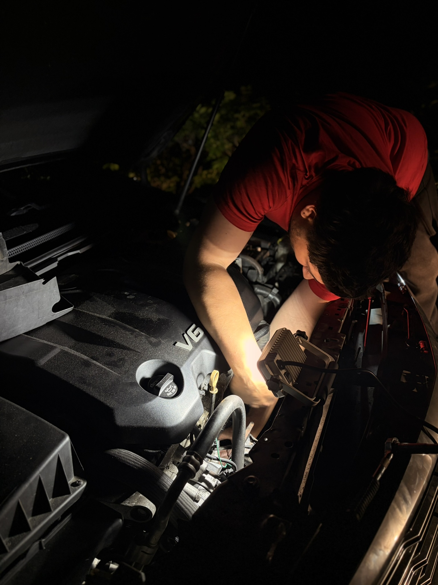
Same-day help when the vehicle is stuck and the shop is not an option.
Mobile service
Expert repairs
Reliable and trusted
Fast on site
What Matthew works on
Built around the services drivers usually need fast: safe stopping, fluids, ignition, diagnostics, and repair work that can be completed where the vehicle sits.

Pads, rotors, caliper checks, brake inspections, and stopping-power concerns.
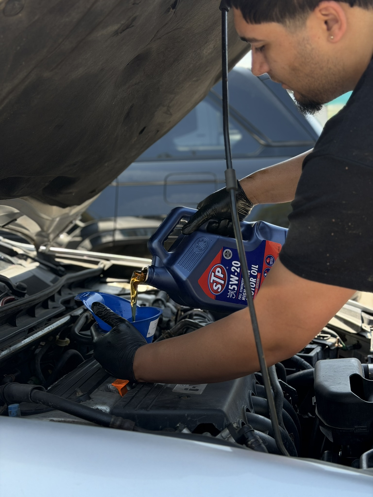
Oil changes, fluid checks, leak checks, and basic maintenance without a waiting room.
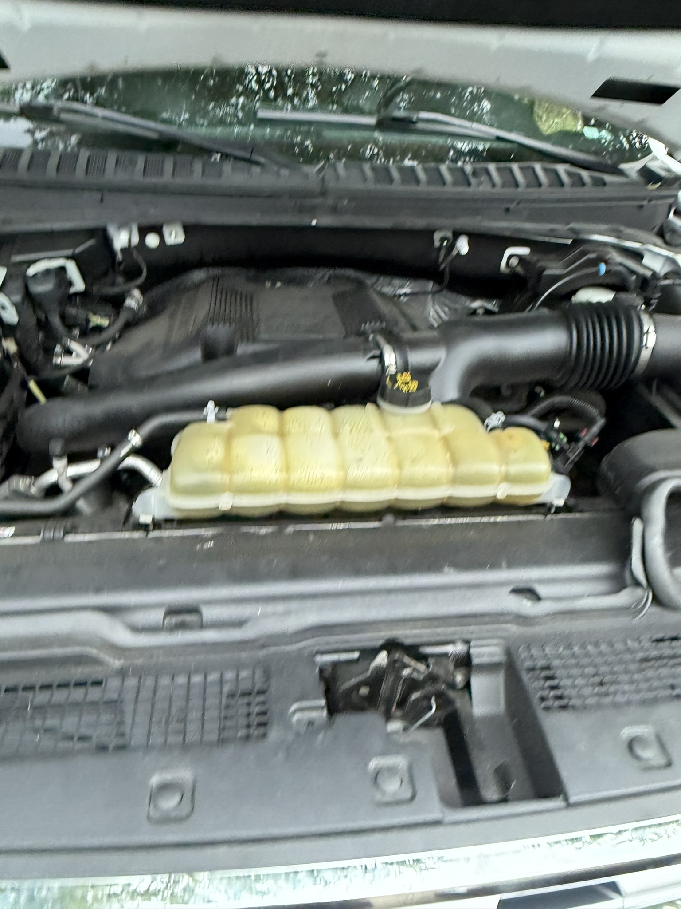
Spark plugs, ignition coils, filters, misfire checks, and smoother starting.
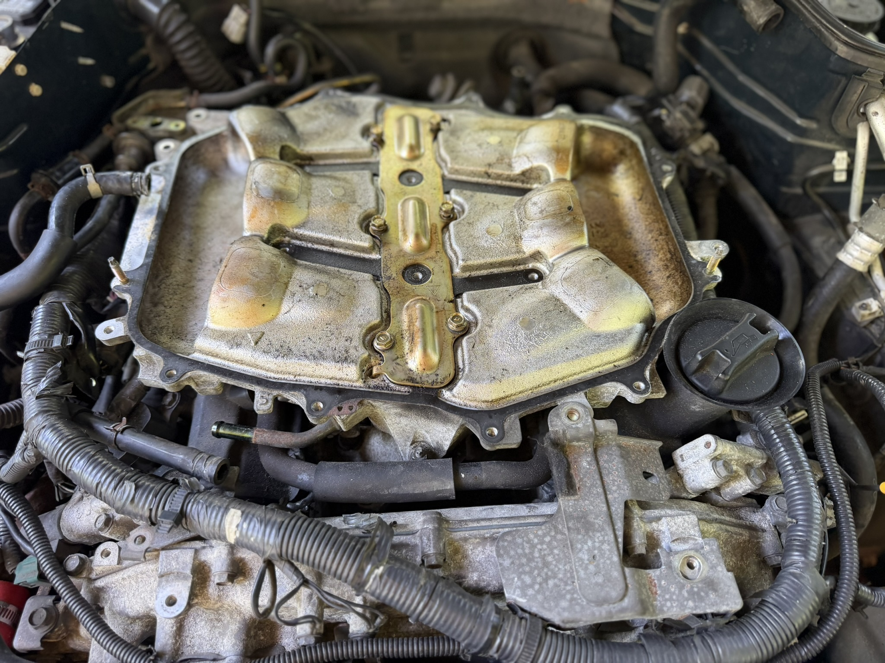
Check-engine lights, no-start issues, rough running, and practical repair guidance.
Real repair photos
Every image uses descriptive filenames, captions, and alt text so the site can show Matthew’s actual work clearly to both visitors and search engines.
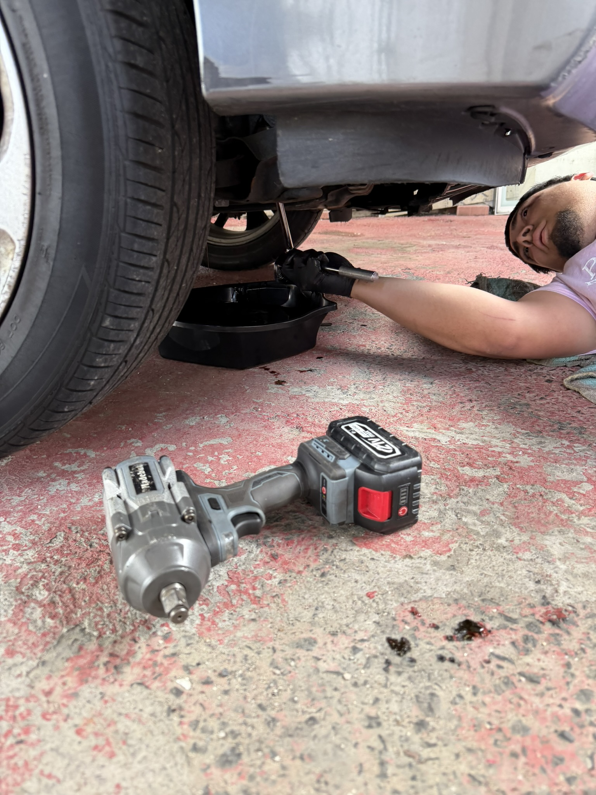
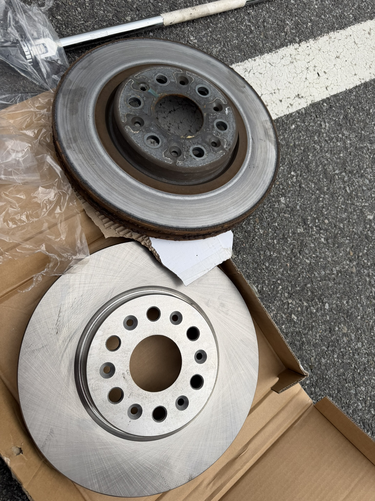
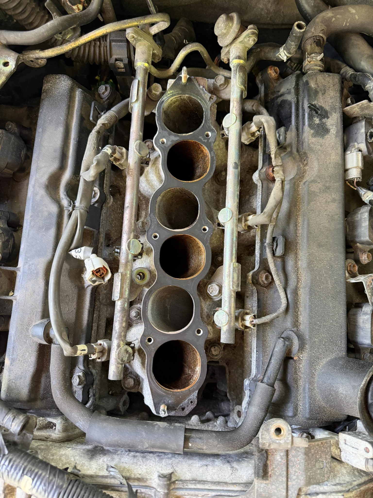
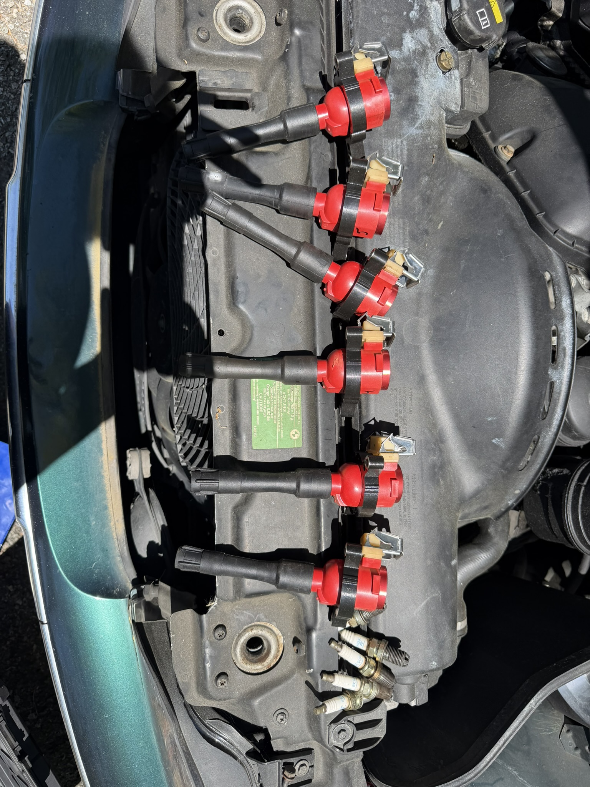
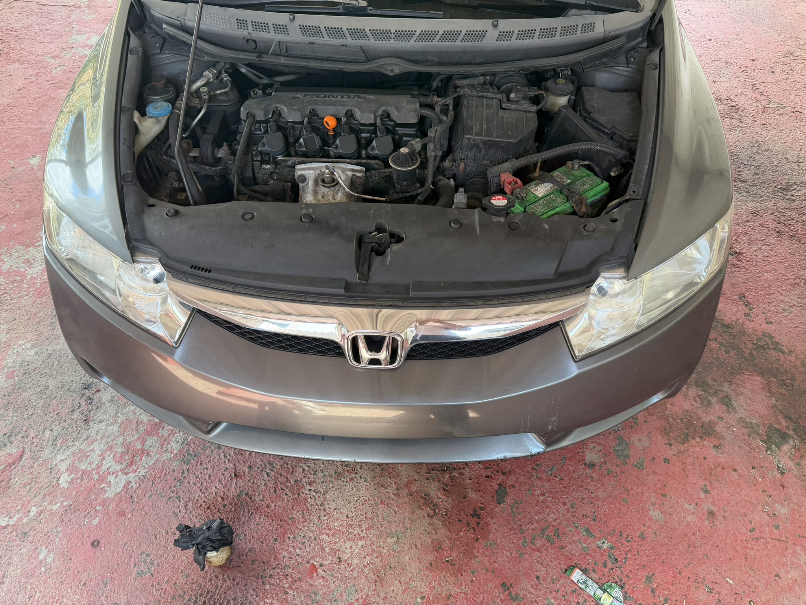
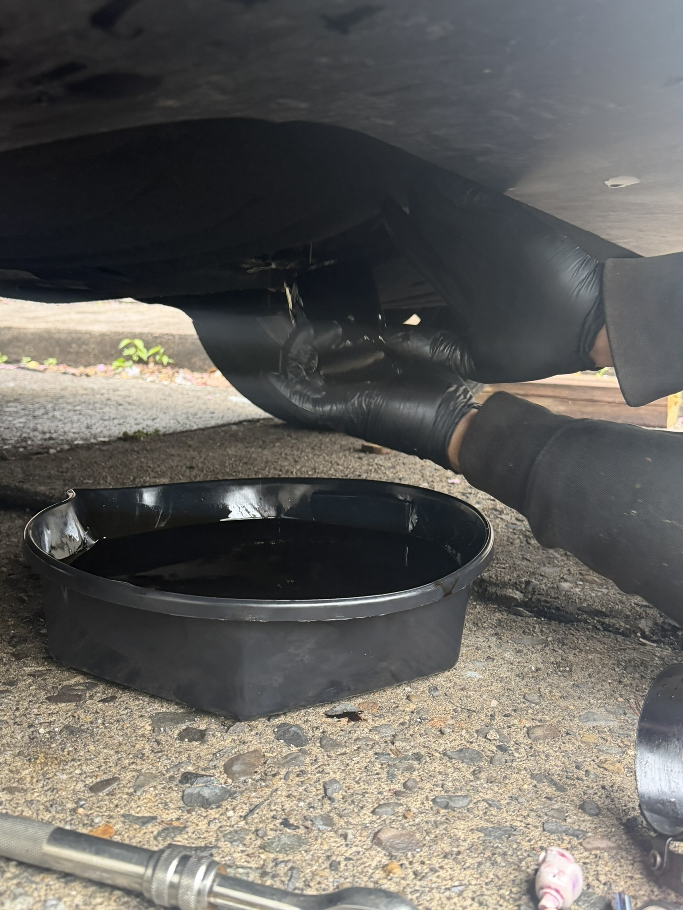
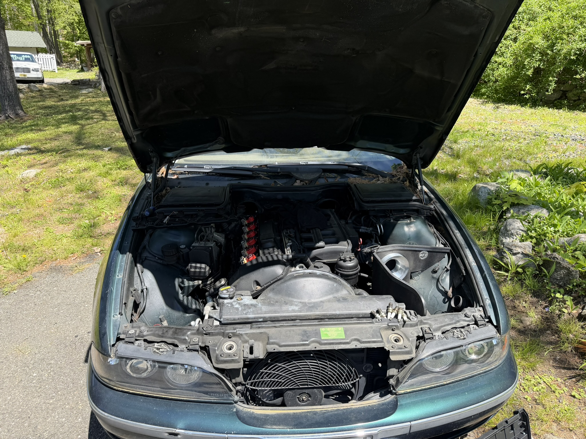
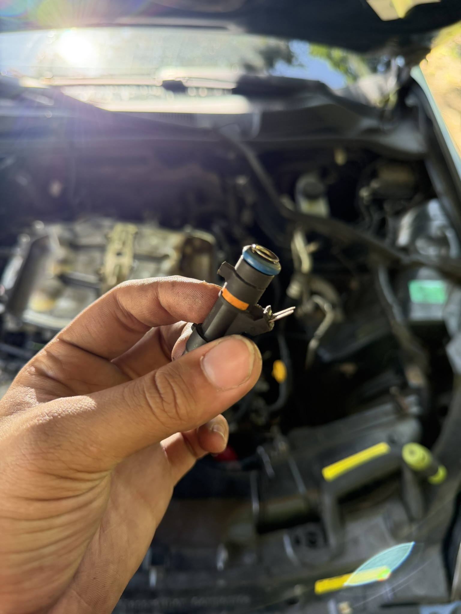
Meet Matthew
Matthew is shown throughout the site because trust matters when someone is coming to your home, job, or parking lot. The gallery keeps the focus on real work: brake service, oil changes, diagnostics, tune-ups, and repairs on everyday vehicles.
Service area
The page is ready to target towns and counties Matthew actually serves. Replace this starter list with his exact coverage before launch: Bergen County, Passaic County, Essex County, Hudson County, Morris County, Clifton, Paterson, Newark, Jersey City, Hackensack, and surrounding towns.
Fast quote
For the live site, this can send to email, text, Netlify Forms, or a booking tool. The sample keeps the structure ready without submitting real customer data anywhere.